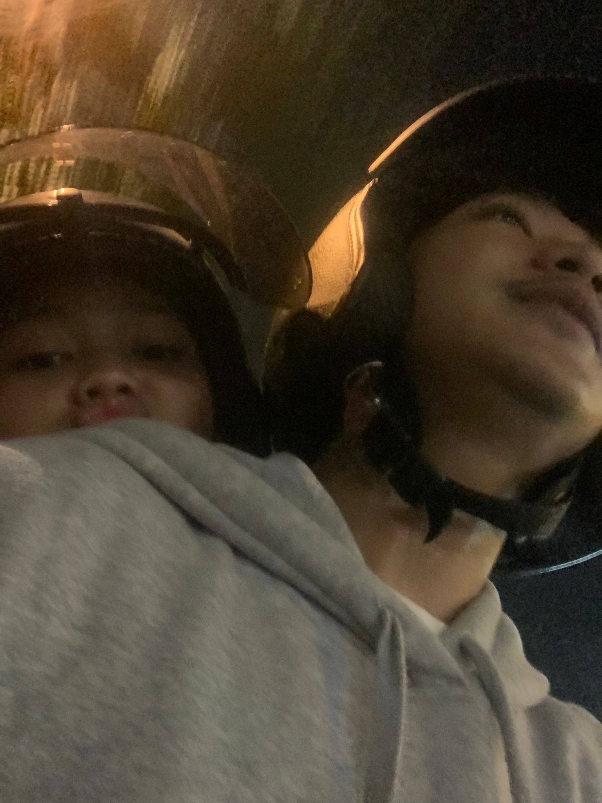

Kenali Tim kami
Individu-individu berdedikasi di balik keberhasilan kegiatan kami. Setiap anggota membawa keterampilan dan perspektif unik untuk mendukung kegiatan Pengabdian kepada Masyarakat (PKM).

DIKI ALMAKI
Ketua
Memimpin dengan visi dan semangat. Diki mendorong inisiatif strategis kami dan memastikan setiap anggota merasa dihargai.

Nanang
Wakil Ketua
Seorang wakil ketua yang memiliki kemampuan organisasi dan komunikasi yang baik. Bertanggung jawab dalam mengoordinasikan kegiatan serta menjalin kerja sama dalam pelaksanaan program PKM.

Intan Jelek
Diem Aja
Ga ada kontirbus.
Kesa Kesa
Anggota
Anggota.

Anton
Tukang Makan
Jagoan Dapur.

Kicaw Mania
Dokumentas
tukang foto.